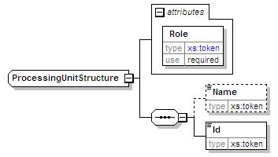
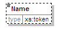
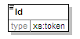

| diagram |  | ||||||||||||
| namespace | urn:oasis:names:tc:evs:schema:eml | ||||||||||||
| children | Name Id | ||||||||||||
| used by | |||||||||||||
| attributes |
|
||||||||||||
| source | <xs:complexType name="ProcessingUnitStructure"> <xs:sequence> <xs:element name="Name" type="xs:token" minOccurs="0"/> <xs:element name="Id" type="xs:token"/> </xs:sequence> <xs:attribute name="Role" use="required"> <xs:simpleType> <xs:restriction base="xs:token"> <xs:enumeration value="next receiver"/> <xs:enumeration value="previous sender"/> <xs:enumeration value="receiver"/> <xs:enumeration value="sender"/> <xs:enumeration value=""/> </xs:restriction> </xs:simpleType> </xs:attribute> </xs:complexType> |
| type | restriction of xs:token | ||||||||||||||||||
| properties |
|
||||||||||||||||||
| facets |
|
||||||||||||||||||
| source | <xs:attribute name="Role" use="required"> <xs:simpleType> <xs:restriction base="xs:token"> <xs:enumeration value="next receiver"/> <xs:enumeration value="previous sender"/> <xs:enumeration value="receiver"/> <xs:enumeration value="sender"/> <xs:enumeration value=""/> </xs:restriction> </xs:simpleType> </xs:attribute> |
| diagram |  | ||||||||
| namespace | urn:oasis:names:tc:evs:schema:eml | ||||||||
| type | xs:token | ||||||||
| properties |
|
||||||||
| source | <xs:element name="Name" type="xs:token" minOccurs="0"/> |
| diagram |  | ||||
| namespace | urn:oasis:names:tc:evs:schema:eml | ||||
| type | xs:token | ||||
| properties |
|
||||
| source | <xs:element name="Id" type="xs:token"/> |